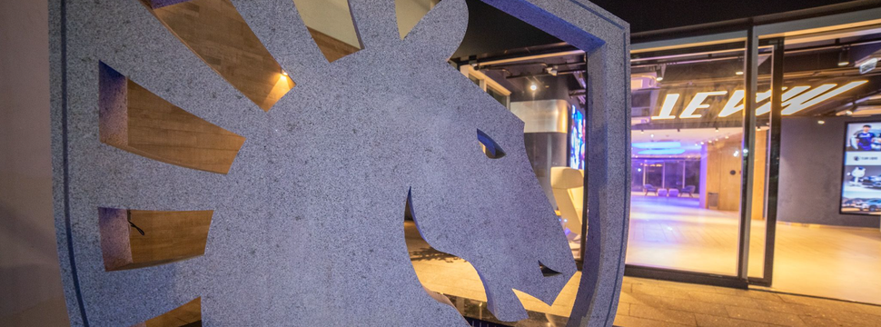

Brasil em Destaque

A Team Liquid, em parceria com a Alienware, inaugurou um centro de
operações em São Paulo. Esta instalação é o maior centro esportivo,
administrativo e de moradia de uma organização de eSports no mundo.
O novo centro serve como base para todas as atividades da equipe no
Brasil, proporcionando um espaço de treinamento de alta tecnologia e
comodidades para os jogadores e equipe administrativa. A iniciativa
reforça o compromisso da Team Liquid com o desenvolvimento dos
eSports no Brasil.
“O Brasil é uma prioridade nos planos da Liquid, e a nova instalação
é mais um símbolo dos nossos investimentos nos talentos e fãs
locais”, afirma Rafael Queiroz, general manager da Team Liquid no
Brasil. “Do começo do ano passado pra cá, anunciamos a primeira
line-up feminina da Liquid em todo o mundo, trouxemos a Liquid Store
e a plataforma Liquid+ para o país, lançamos collabs com a Marvel,
Fortnite e Naruto, e participamos de grandes eventos, como a BGS e a
CCXP. Estamos e continuaremos muito próximos da comunidade da
Cavalaria, e o lançamento desta facility reflete a importância do
país dentro da estratégia global da organização.” Segundo, Rafa
Queiróz em entrevista so site Adrenaline.
ADRENALINE. Team Liquid e Alienware inauguram centro de operações em São Paulo. Adrenaline, São Paulo, 3 jul. 2023. Disponível em: https://www.adrenaline.com.br/games/e-sport/team-liquid-e-alienware-inauguram-centro-de-operacoes-em-sao-paulo Acesso em: 3 jul. 2024.